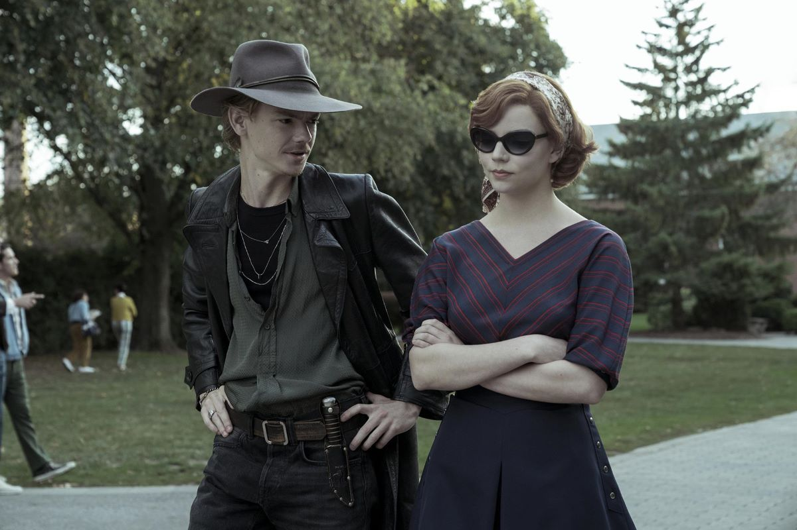

Sobre mim:
Apaioxonado por videogames desde meu primeiro super nintendo, dado de presente por meu tio quando eu tinha 5 anos.
ALfabetizado nas fases bônus de Donkey Kong, e após a porta da alfabetização ser aberta nunca mais parou de buscar conhecimento nas mais diversas areas.
Tendo preferência sempre pela area das ciências exatas eum forte espirito competitivo me participou de todas as edições da OBMEP que pode participar
resultando em 3 medalhas.
Me tornei professor de física, química e matemática e agora estou em transição de carreira para a area de TI para realizar o meu sonho de ser um profissional da tecnologia
e continuar sendo um Nerd e CrossFiteiro nas horas vagas
Imagem da minha série favorita
